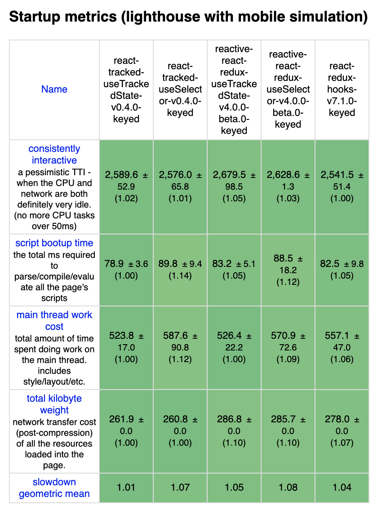

Introduction
React-Redux provides hooks API
with nice abstraction.
Especially, useSelector is probaly less misused than mapStateToProps.
react-tracked is a library for global state without Redux. This library provides almost compatible hooks API to React-Redux. It’s developed with performance in mind, and it should be as performant as React-Redux, even though it utilizes only React context. See the GitHub repo for more information.
https://github.com/dai-shi/react-tracked
This post shows benchmark results to convince that it actually is performant in one scenario.
It’s worth mentioning that react-tracked, as the name implies,
has another useTrackedState hook that has capability of
state usage tracking. Unlike useSelector, developers don’t need
to define selectors for this hook.
It’s also worth mentioning that another library
reactive-react-redux
provides the useTrackedState hook for Redux.
See the GitHub repo for more information.
https://github.com/dai-shi/reactive-react-redux
We compare all hooks described above.
Benchmark tool
To benchmark different frameworks, js-framework-benchmark is used.
Checkout the forked repo if you want to reproduce the benchmark result at your end.
Benchmark results
- react-tracked-useTrackedState:
useTrackedStatein react-tracked v0.4.0 - react-tracked-useSelector:
useSelectorin react-tracked v0.4.0 - reactive-react-redux-useTrackedState:
useTrackedStatein reactive-react-redux v4.0.0-beta.0 - reactive-react-redux-useSelector:
useSelectorin reactive-react-redux v4.0.0-beta.0 - react-redux-hooks:
useSelectorin react-redux v7.1.0



Closing notes
The benchmark code for useSelector is almost identical
among three libraries.
The code for useTrackedState is also identical
between two libraries.
However, the code for useSelector and
the code for useTrackedState is a bit different
and they are optimized separately.
Hence, be reminded when comparing with different hooks.
I hope these results encourage developers to try my two libraries.